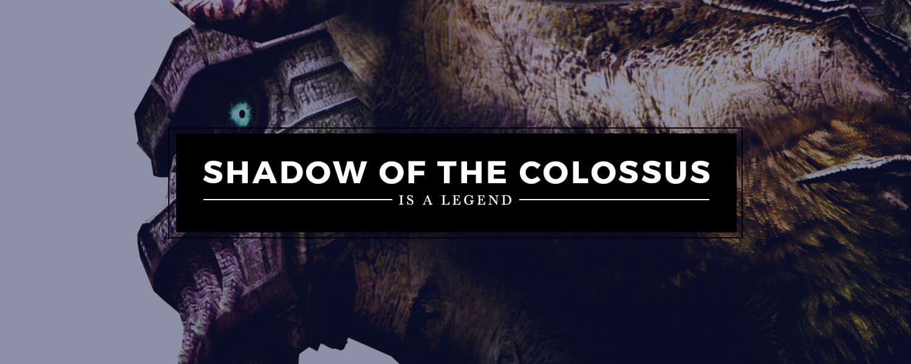
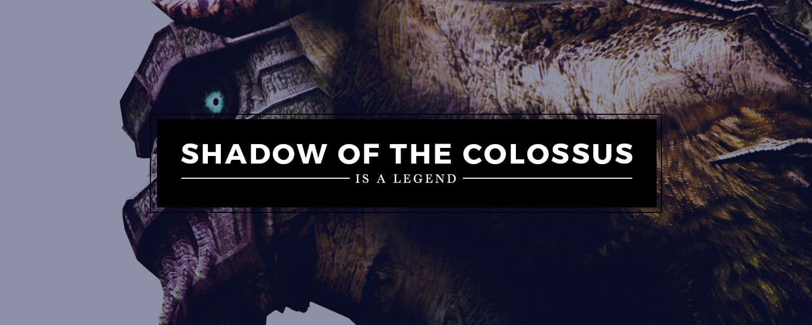
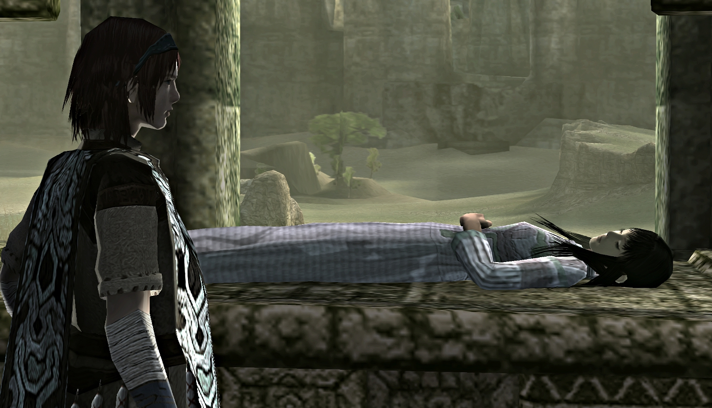

.jpg) 

Sobre:
"Shadow of the Colossus" é caracterizado por seu design minimalista e ênfase em batalhas épicas contra gigantes colossos. Em vez de enfrentar inimigos menores, os jogadores devem explorar um vasto mundo aberto e derrotar dezesseis colossos, cada um com uma abordagem única para ser vencido. Equipado com uma espada mágica e acompanhado por seu cavalo Agro, o protagonista Wander deve usar inteligência e habilidade para escalar e derrotar essas criaturas titânicas. A trilha sonora atmosférica e a direção de arte deslumbrante são elementos-chave que contribuem para a experiência imersiva do jogo.
Personagens Principais:
Wander:
Ele é o protagonista do jogo. Sua jornada começa quando ele chega a uma terra proibida e coloca o corpo sem vida de Mono em um altar no Templo da Adoração. Determinado a trazer Mono de volta à vida, ele faz um pacto com uma entidade misteriosa chamada Dormin para derrotar os Colossi, seres gigantes espalhados por toda a terra, em troca da ressurreição de Mono. Wander é retratado como um jovem corajoso, porém solitário, cujas motivações e história pessoal são reveladas gradualmente durante o jogo.

Mono:
Ela é uma personagem importante, embora não esteja ativamente presente na maior parte do jogo. Mono é uma donzela cujo destino trágico desencadeia os eventos da história. Ela é inicialmente apresentada como morta, mas sua ressurreição é o objetivo principal de Wander.
